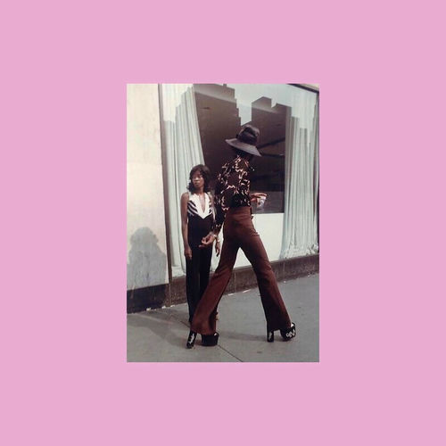

Debbie Taylor
Maydie Myles is an American soul and jazz singer who is highly acclaimed for her recordings in the 1960s and 1970s when she was known professionally as Debbie Taylor. Her most successful record, "Never Gonna Let Him Know", reached the Billboard pop chart in 1969.
Complete Discography & Tracklists (5)